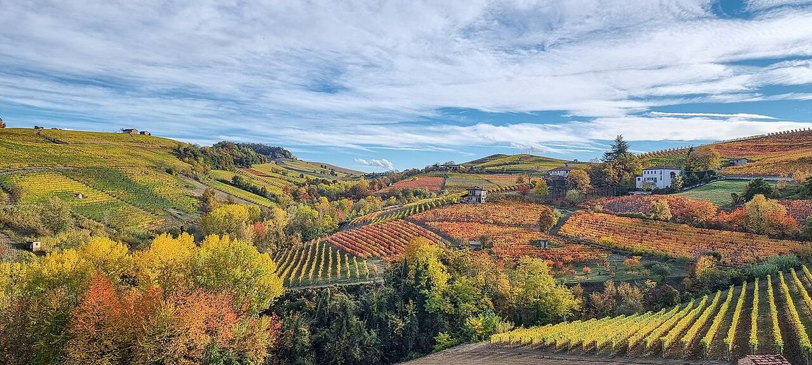
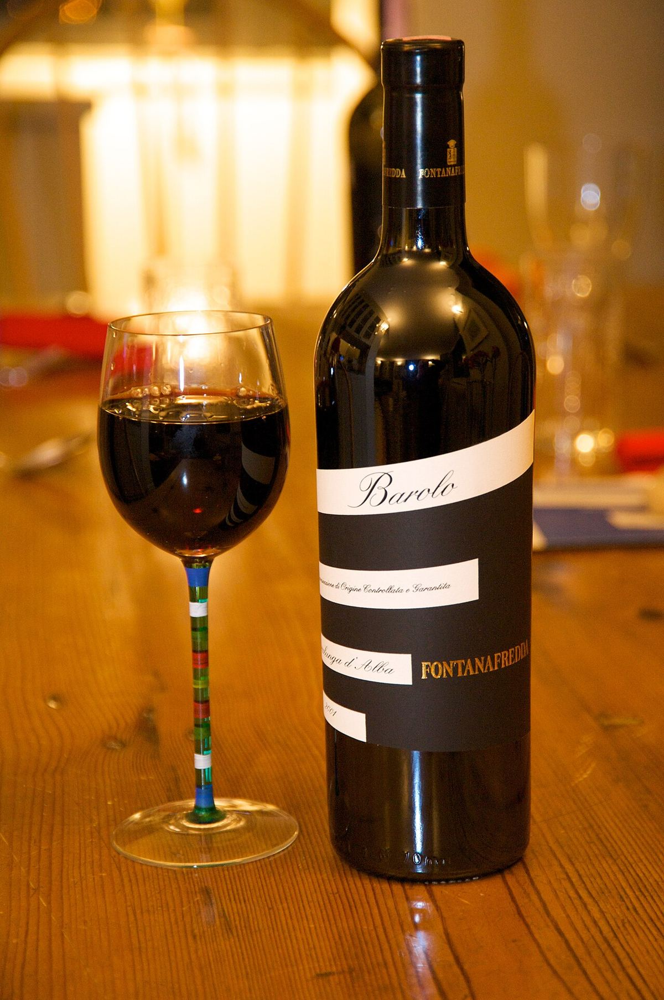
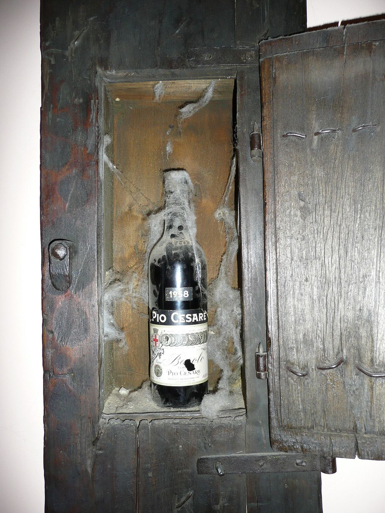

RED
Barolo, made exclusively from Nebbiolo in the Langhe hills of Piedmont, is one of Italy's great age-worthy reds. It was one of the country's first DOCGs, recognised in 1980.

Nebbiolo has been grown for centuries in the hills of the Langhe, but Barolo as it is known today, a dry red capable of long ageing, took shape in the nineteenth century. Leading roles in its development were played by the Marchioness Giulia Colbert Falletti, who owned vineyards in Barolo, and by Camillo Benso, Count of Cavour, who held land in Grinzane. The wine won the favour of the House of Savoy, and the phrase «king of wines and wine of kings» became widespread. It was recognised as a DOC in 1966 and as a DOCG in 1980. In the last decades of the twentieth century, the debate between «traditionalists», who favoured long macerations and large casks, and «modernists», who introduced shorter macerations and barriques, shaped the evolution of the designation.
The production zone covers eleven municipalities south-west of Alba: Barolo, La Morra, Castiglione Falletto, Serralunga d'Alba, Monforte d'Alba, Novello, Grinzane Cavour, Verduno, Diano d'Alba, Roddi and Cherasco, the first five accounting for most of the vineyard area. The climate is continental, with cold winters and warm summers, and Nebbiolo, which buds early and is harvested late, is planted preferably on the best-exposed slopes, facing south and south-west.
The soils are calcareous and clay marls of marine origin. Two main formations are traditionally distinguished: to the west, around La Morra and Barolo, marls of Tortonian age predominate and are usually associated with more perfumed and approachable wines; to the east, in Serralunga d'Alba, Monforte d'Alba and Castiglione Falletto, the formations of Serravallian age, with more sandstone, tend to give more structured and tannic wines.
Since the 2010 vintage, the rules have recognised the Menzioni Geografiche Aggiuntive (MGA), which officially delimit the historic vineyards or crus, such as Cannubi, Brunate, Cerequio, Rocche dell'Annunziata and Vigna Rionda, whose names may appear on the label. The names of the municipalities may also be stated.
Barolo must be made from 100% Nebbiolo. The minimum ageing period is 38 months, at least 18 of them in wood, and the Riserva designation requires 62 months. The wine usually shows a garnet colour of medium intensity that develops orange hues with age, aromas of rose, cherry, liquorice, tar and spice, and a palate of lively acidity and firm tannins that soften over the years. The designation also includes Barolo Chinato, a wine flavoured with cinchona bark and other spices.





